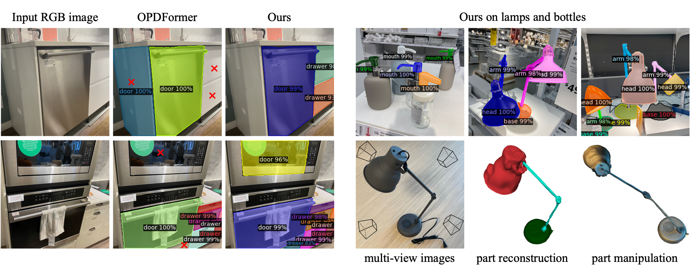

Abstract
Our method predicts high-quality instance segmentation of moveable parts, with semantic labels, on photos of real-world scenes. Left shows comparison with OPDFormer, the current state of the art, where the small red ×s indicate erroneous or missed labels. As an application of accurate moveable part segmentations (lamps on top right), we can manipulate 3D reconstructions of articulated objects (lamps on bottom right).

We introduce the first active learning (AL) framework for high-accuracy instance segmentation of moveable parts from RGB images of real indoor scenes. As with most human-in-the-loop approaches, the key criterion for success in AL is to minimize human effort while still attaining high performance. To this end, we employ a transformer that utilizes a masked-attention mechanism to supervise the active segmentation. To enhance the network tailored to moveable parts, we introduce a coarse-to-fine AL approach which first uses an object-aware masked attention and then a pose-aware one, leveraging the hierarchical nature of the problem and a correlation between moveable parts and object poses and interaction directions. Our method achieves close to fully accurate (96% and higher) segmentation results, with semantic labels, on real images, with 82% time saving over manual effort, where the training data consists of only 11.45% annotated real photographs. At last, we contribute a dataset of 2,550 real photographs with annotated moveable parts, demonstrating its superior quality and diversity over the current best alternatives.